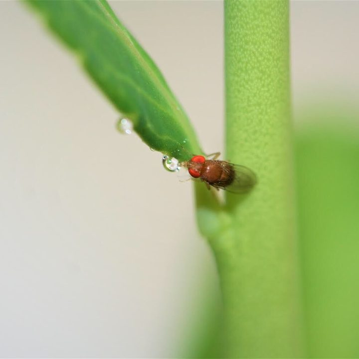
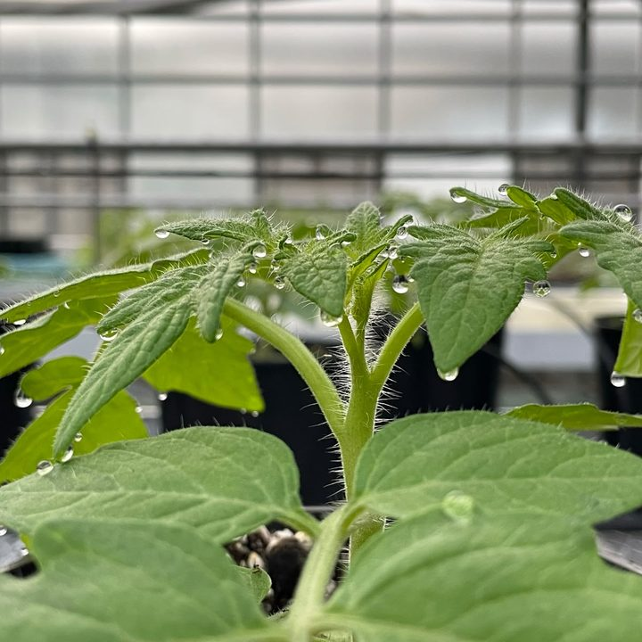
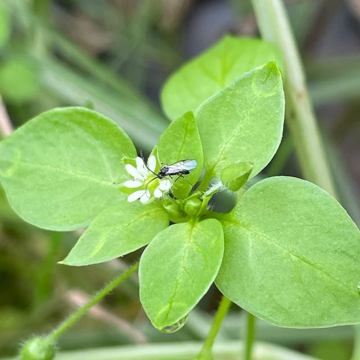
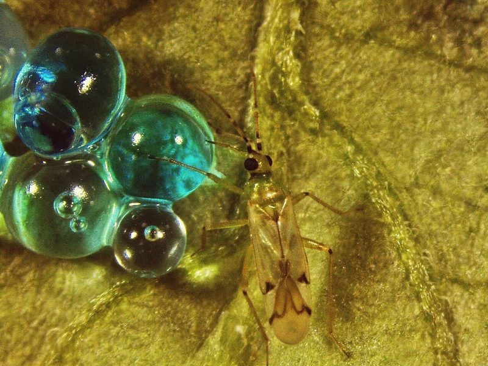
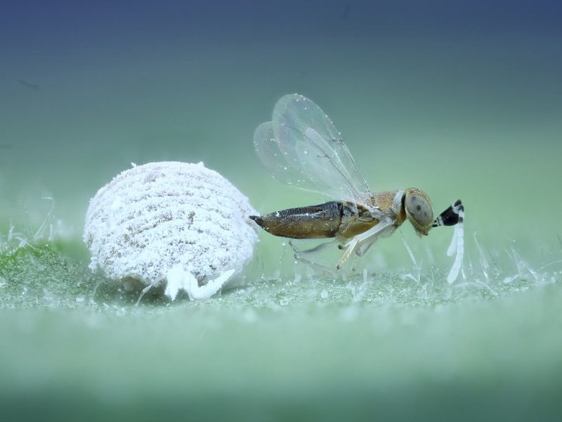
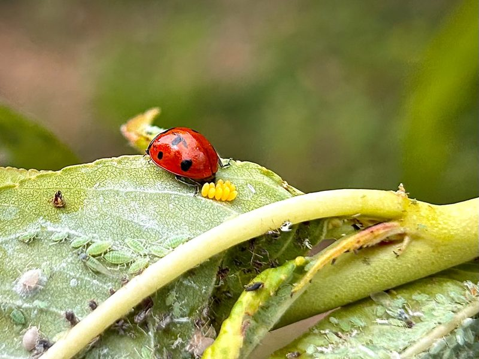
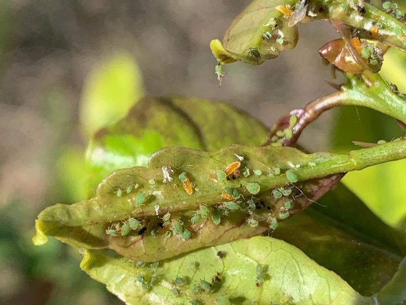

Insect nutritional ecology
Our work on insect nutrition started with sugar supplements for the predator Nesidiocoris tenuis, which helped it settle in greenhouse tomato and made it feed less on the crop. Since then we have turned to the foods insects find on plants. Guttation droplets are a nutrient-rich food for herbivores, predators and parasitoids. Honeydew can carry an active plant defence protein that benefits natural enemies, and mealybug honeydew loses value for parasitoids under elevated CO2 and drought. We also test floral and plant-derived foods for the parasitoids of Tuta absoluta, and whether pollen can help predatory mites cope with hotter, drier conditions.
Systems: tomato, blueberry, citrus
- Sugar as nutritional supplement for the zoophytophagous predator Nesidiocoris tenuisBioControl, 2013
- Plant guttation provides nutrient-rich food for insectsProceedings of the Royal Society B, 2020
- Not just candy: A herbivore-induced defence-related plant protein in honeydew enhances natural enemy fitnessFunctional Ecology, 2024
- Elevated CO2 and Water Limitation Alter the Primary Metabolite Composition of Mealybug Honeydew, Reducing Parasitoid FitnessJournal of Agricultural and Food Chemistry, 2026

Chemical ecology
Much of our chemical ecology work deals with spotted-wing drosophila in blueberry. Fruit volatiles explain why the fly is drawn more to some blueberries than to others, and leaf volatiles also play a part. Fruit infected by the fungus Colletotrichum fioriniae has the opposite effect and repels the fly, and we have identified two of the volatiles behind it. In cranberry we looked at how an herbivore-induced plant volatile and colour together shape the insect community, and in the field we tested an attract-and-kill formulation against spotted-wing drosophila.
Methods: volatile collection, GC-MS, electroantennography, behavioural bioassays
- Repellent, oviposition-deterrent, and insecticidal activity of the fungal pathogen Colletotrichum fioriniae on Drosophila suzukii (Diptera: Drosophilidae) in highbush blueberriesScientific Reports, 2020
- Fruit volatiles mediate differential attraction of Drosophila suzukii to wild and cultivated blueberriesJournal of Pest Science, 2021
- Two volatiles from anthracnose-infected blueberries trigger electrophysiological and aversive behavioral responses in Drosophila suzukii (Diptera: Drosophilidae)Journal of Economic Entomology, 2025
- Role of leaf volatiles in spotted-wing drosophila (Diptera: Drosophilidae) attraction to blueberry fruitsJournal of Insect Science, 2026

Plant–insect interactions
Plants react to the insects that live on them, and those reactions spread through the food web. Predators that also feed on plants, such as Nesidiocoris tenuis and Macrolophus pygmaeus, switch on defences in tomato, in the second case even against root-knot nematodes. Whiteflies can manipulate salicylic and jasmonic acid signalling in ways that weaken parasitoid recruitment, and crop domestication has changed the nutritional content of guttation, with effects higher up the food chain. We have also tested whether elicitors of plant defences can protect blueberries from spotted-wing drosophila, and in citrus we have studied how climate change alters the interactions among predatory mites and their prey. Being based next to plant immunity researchers at UJI lets us look at all of this from the plant's side.
Systems: tomato, citrus, blueberry · Pests: Bemisia tabaci, Tuta absoluta
- Defensive plant responses induced by Nesidiocoris tenuis (Hemiptera: Miridae) on tomato plantsJournal of Pest Science, 2015
- Plant domestication alters the nutritional content of guttation droplets with multi-trophic consequencesJournal of Chemical Ecology, 2025
- Macrolophus pygmaeus induces systemic resistance in tomato against MeloidogyneScientific Reports, 2025
- Salicylic and jasmonic acid crosstalk manipulation by whiteflies weakens larval parasitoid recruitmentJournal of Experimental Botany, 2026

Biological control
Biological control is where our work on what insects eat, what they smell and how plants respond turns into tools for growers, often together with plant health services and biocontrol companies.




Ganaspis kimorum and Leptopilina japonica
Classical and augmentative biological control of an invasive fruit pest. We took part in the first releases of G. kimorum in Catalonia in 2025, and Pablo is now the scientific coordinator of the release programme in the Valencian Community.
With IRTA and the plant health services of Catalonia and the Valencian Community
Dolichogenidea gelechiidivoris
A parasitoid of Tuta absoluta in tomato crops. We have improved the methods to monitor it in the field and to see parasitism inside host larvae, measured the side effects of pesticides used in organic and conventional tomato, and studied how it competes with other parasitoids and which plant-derived foods sustain it.
Sugars, flowers and artificial diets
Well-fed natural enemies live longer and control more pests. Sugar supplements help the predator Nesidiocoris tenuis establish in greenhouse tomato and make it feed less on the crop, and sweet alyssum (Lobularia maritima) offers a nutrient-rich floral food to parasitoids of Tuta absoluta. We are now developing artificial diets for natural enemies that can be used in the field.